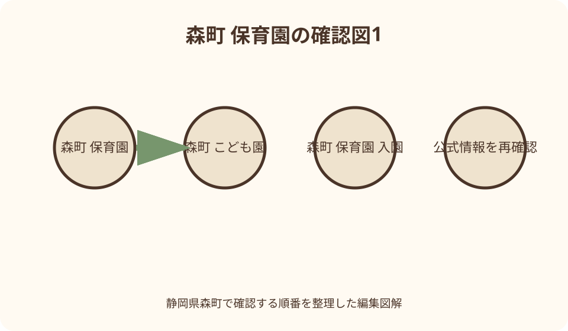
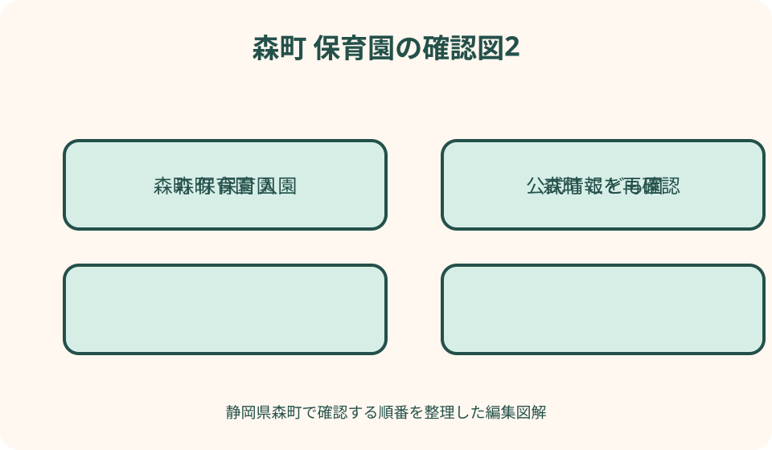

子育て・保育｜最終確認 2026-08-10
静岡県森町の保育園・こども園入園ガイド｜年度申込・見学・送迎を準備
静岡県森町で保育所等を希望する場合は、認可保育所、幼保連携型認定こども園、小規模保育事業所の対象年齢と保育時間を町公式一覧で比べ、健康こども課幼稚園保育園係（0538-86-6300）へ当年度の申込書類を提出します。町は翌年度分を例年9月中旬から10月中旬に募集し、育休明けなど年度途中の希望も一斉募集時の申込みを案内しています。空き表示があっても入所を保証せず、利用調整、保育士配置、転入時期により結果は変わります。見学では送迎所要、給食・アレルギー、ならし保育、延長条件を施設ごとに確認してください。
最初に分ける——保育所・こども園・小規模・幼稚園
森町公式の二〇二六年四月更新ページは、町内に私立認可保育園二か所、小規模保育事業所二か所、認定こども園一か所を掲載しています。町立幼稚園は別の申込案内で扱われるため、同じ一覧だと思わず入口を分けます。
認可保育所と保育認定のこども園は、保護者が就労、妊娠・出産、疾病、介護、求職等により保育を必要とすることを申請します。園を選んだだけで利用が決まるのではなく、認定と利用調整を経て内定・決定へ進みます。
小規模保育事業所は町公式上、原則として零歳児から二歳児までが対象です。少人数という特徴だけで選ばず、三歳になる年度以降の進級・転園の接続先、行事、園庭利用、給食を見学時に確認します。
町立幼稚園は教育施設で、令和八年度は飯田、園田、森の三園が申込先として掲載されています。教育時間、預かり保育、長期休業、給食と弁当の日が保育所等と異なるため、保護者の勤務表へ実際の送迎時刻を重ねます。
五つの保育所等を読む——所在地と年齢を取り違えない
ときわこども園は森町向天方、摩耶保育園は森、プティ森町園は飯田にあり、町公式では零歳から就学前を対象に掲載しています。定員は施設全体の数字であり、希望年齢にその人数分の空きがある意味ではありません。
もりの保育所は森町保健福祉センターと同じ森五〇番地の一、ゆうな保育園は中川にあります。いずれも小規模保育所として原則零歳から二歳まで、定員十九名と掲載されていますが、月齢条件は申込年度に確認します。
施設名に「保育園」「保育所」「こども園」が混在しても、看板だけで申込経路を判断しません。町の施設区分、教育認定か保育認定か、年齢、直接契約か町の利用調整かを幼稚園保育園係へ確認します。
院内保育や認可外施設を検索で見つけても、町の認可保育所等と同じ対象とは限りません。勤務先限定、独自契約、助成の扱いがあり得るため、町一覧にない施設は運営者と町の双方へ位置付けを尋ねます。
保育時間を比較する——開園時刻と利用可能時間は別
町公式一覧では、ときわこども園と摩耶保育園は七時から十八時、延長は十九時まで、プティ森町園は七時三十分から十八時三十分で朝の延長を掲載しています。これは二〇二六年八月確認値で、利用前に施設へ再確認します。
もりの保育所とゆうな保育園は七時三十分から十八時三十分と掲載されています。ただし施設の開所時間内なら全家庭が端から端まで利用できるとは限らず、保育必要量、就労・通勤時間、延長申請に応じた利用になります。
保育標準時間と保育短時間の区分、延長料金、土曜保育、休園日、年末年始、災害時引渡しは施設ごとに聞きます。勤務開始時刻だけでなく、自宅から園、園から職場までの混雑時の移動を含めて必要時間を説明します。
早朝や閉園直前の利用を想定する家庭は、毎日利用できるか、申込期限、勤務証明、延長時の軽食、遅れる場合の連絡方法を確認します。時刻表の一行だけで長時間保育を確約されたと考えません。

年齢の基準を確認する——誕生日と年度初日の二つを見る
保育料の年齢区分は、町公式の令和八年度案内で入園年度の四月一日時点の年齢を使います。一方、受入月齢や小規模保育の終了時期は別の基準があり得るため、「もう三歳だから無料」と誕生日だけで計算しません。
零歳児の受入開始月齢は、施設、出生時期、健康状態、保育士配置で確認が必要です。復職日から逆算する場合は、出産前の予定日だけで申込みを固定せず、申込時に必要な出生後の変更届も聞きます。
幼稚園は年少、年中、年長の生年月日範囲が年度案内に明記されます。令和八年度の範囲を翌年度へ流用せず、きょうだいでも各児童一人ごとに当年度の申込書と課税書類の要否を確認します。
二歳児が小規模保育所を希望する時は、その年度だけでなく翌年四月の移行先を質問します。連携施設があるか、改めて利用調整を受けるか、幼稚園へ進むかを把握し、転園を直前の問題にしません。
年度申込を逆算する——一斉募集に途中入園希望も出す
森町は保育所等の翌年度募集を毎年九月中旬から十月中旬に行うと案内しています。令和八年度の正確な受付日、窓口時間、電子申請の有無は当該年度ページを読み、前年の日付で予定を組みません。
育児休業からの復帰など年度途中の入所を希望する場合も、一斉募集時に申し込むよう町公式が案内しています。四月入所ではないから春まで待つのではなく、復職予定月を決めた段階で幼稚園保育園係へ相談します。
申込書には希望施設、家庭状況、保育を必要とする理由を記載し、就労証明等を添えます。勤務先へ証明を依頼する時間も必要なので、締切一週間前を家庭内の提出目標とし、不備を直す余地を残します。
一斉募集期限後も受付される場合がありますが、同じ条件で選考される保証はありません。希望月を変更する可能性も公式に示されているため、遅れた時は提出可能日と選考時期を直接確認します。
申込書類をそろえる——家庭状況の変化は選考前に届ける
令和八年度案内には、教育・保育給付認定申請書兼入所申込書、家庭状況確認シート、チェックシート、就労証明書や申立書が掲載されています。書式名が似ているため、年度と児童名を右上へメモして管理します。
就労以外の理由では、妊娠・出産、疾病・障害、介護、求職、就学等に応じた証明が必要になります。家庭の事情を自己流の説明文だけで済ませず、町が指定する証明と有効期間を確認します。
申込後に就労時間、退職、採用、住所、家族構成、希望順位が変わった時は速やかな連絡が必要です。町は変更を届けないまま決定した場合に内定・決定を取り消す場合があると案内しています。
提出時は、受理日、希望月、希望順位、追加書類、次の通知時期を控えます。コピーへ個人番号等が含まれる時は家庭内の保管場所を決め、不要な写真をクラウドやメッセージへ残しません。

利用調整を理解する——第一希望と内定を同一視しない
申込者が多い時、森町は保護者の就労、家庭状況、きょうだいの在園等を利用調整指数表に沿って総合判断し、必要性が高い世帯から内定すると説明しています。先着順だけで決まる制度ではありません。
希望欄を多く書けば必ずどこかに入れるわけでも、第一希望だけなら優先されるわけでもありません。通園可能な範囲、保育時間、年齢、移行先を見学後に整理し、実際に利用できる施設だけを順位付けします。
一斉募集の内定予定時期は年度ごとに示され、正式な決定は入所希望月のおよそ一か月前という案内です。予定は申込状況で前後するため、職場へは確定通知前に入園を断定して伝えません。
内定後は園へ連絡し、面談、健康情報、持ち物、ならし保育へ進みます。辞退する場合は次の利用調整にも影響するため、家族だけで保留せず町と施設へ速やかに連絡し、受付日も残します。
空き状況を読む——丸・三角・ばつは将来の保証ではない
森町が公表する令和八年度入所可能数見込みは、丸を四人以上、三角を一人から三人、ばつを空きなしとして、施設・年齢別に示しています。これは作成時点の見込みで、今日の確定枠ではありません。
資料自体が、空き表示があっても申込状況により入所できない場合があり、児童の状況や保育士配置で変わると注意しています。検索で丸を見つけても、申請前に席を取り置けるとは考えません。
途中入園では、退所予定、進級、職員配置、希望者の指数が月ごとに変わります。電話では「空いていますか」だけでなく、子どもの生年月日、希望月、希望施設、保育理由を伝え、申込可能な選択肢を聞きます。
空きがない時は、翌月待機、希望施設追加、小規模保育、一時預かり、幼稚園預かり、誰でも通園など、対象条件が異なる案を並べます。代案は恒常的な保育を保証しないため、利用上限と予約状況を個別確認します。
保育料と実費を分ける——無料という一語で家計を組まない
令和八年度案内では、三歳以上の保育料は無料としつつ給食費、教材費等は別途、三歳未満は父母等の町民税所得割額により決まると説明しています。年齢は年度初日の基準で確認します。
三歳未満の表は税階層、多子軽減、同居祖父母の税情報等により読み方が変わります。世帯年収から概算を断定せず、課税資料を基に町が算定した正式な通知を家計の基準にします。
延長保育、用品、行事、写真、布団、送迎、給食の追加費用は園ごとに異なり得ます。見学時に月額だけでなく、入園時、毎月、年数回、任意購入へ分けた費用表があるか尋ねます。
ならし保育で利用時間が短くても、町公式は正規の保育料がかかると案内しています。復職前の収入減と一か月分の支出を同時に見込み、無料や日割りになると決めつけません。
見学で見る——保育方針を生活の動線へ翻訳する
見学は行事の華やかさだけでなく、登園から降園までの一日を確認します。受入場所、荷物、手洗い、食事、午睡、外遊び、体調不良時の連絡、保護者への共有を順番に質問します。
子どもの年齢に応じ、零歳児室の安全、二歳児から三歳児への移行、異年齢交流、園庭や散歩経路を見ます。写真で良く見えた設備が希望年齢の普段の生活で使われるかも確認します。
保育理念の説明は、家庭が求める正解を当てる場ではありません。叱り方、けんかへの介入、着替え、排せつ、連絡帳、写真公開など具体的な運用を聞き、家庭と相談できる余地を見ます。
見学日だけの印象で職員数や雰囲気を断定せず、質問への説明、情報更新、緊急時の連絡が明確かを記録します。複数園は同じ質問表で比べ、設備の新しさだけの順位にしません。
給食とアレルギー——対応可能範囲を面談前に伝える
給食は自園調理か搬入か、主食、間食、弁当日、食具、水筒、離乳食の段階を施設へ確認します。町立幼稚園は令和七年度時点で週三日給食、週一から二日弁当との案内があり、今後変更の注記もあります。
食物アレルギーがある場合は、診断内容、医師の指示、除去範囲、緊急薬、誤食時対応を申込後ではなく見学・面談の早い段階で伝えます。施設がどの範囲まで対応できるかは個別判断です。
家庭で食べたことのない食材を園で初めて試す運用にならないよう、献立確認と家庭での進め方を相談します。自己判断の除去や健康効果を理由に、園の標準献立へ無断の変更を求めません。
宗教、文化、嚥下、感覚、偏食など食事上の配慮も、希望と医療上の必要を分けて伝えます。代替食、弁当持参、費用、保管、調理器具の共有を確認し、「対応可」の一言を完全除去保証とは受け取りません。
送迎を試走する——駐車場から玄関までを朝夕に測る
住所を地図で確認しただけでは、朝の右折、狭い道路、駐車待ち、玄関までの歩行を把握できません。見学日は実際の出勤時間帯にも周辺を通り、生活道路の速度と近隣への配慮を確認します。
園の駐車場では、進入方向、台数、送迎ピーク、きょうだいを降ろす場所、雨天時、ベビーカー、祖父母送迎を聞きます。路上や私有地へ短時間なら停められるという前提を置きません。
徒歩や自転車では、歩道、坂、横断、夜間照明、ヘルメット、雨具、荷物量を確認します。送迎バスがあるように見えても、対象区域、年齢、停留所、料金、欠席連絡を施設へ確かめます。
災害や警報時の休園、早迎え、引渡し者登録も送迎計画に含めます。保護者二人が町外勤務なら、近隣の登録可能な迎え手と職場からの所要を決め、緊急連絡が一人で止まらないようにします。
ならし保育と復職——二週間を固定値にしない
森町公式は、初めて保育所等へ入る子どもに短時間から始めるならし保育を行い、おおむね二週間は早めの迎えが必要と案内しています。ただし期間は施設と子どもにより異なります。
入所日前のならし保育はできないとの記載があるため、四月一日から通常勤務へ戻れると先に決めません。復職日、休暇、在宅勤務、祖父母支援を職場と相談し、延びた場合の迎え手も準備します。
町は復職日が月前半か後半かに応じ、設定できる入所月の考え方を示しています。個々の育休期限や勤務先規程と一致するとは限らないため、町と勤務先へ同じ日付を伝えて照合します。
子どもの泣き方だけで成功・失敗を判断せず、食事、水分、睡眠、排せつ、帰宅後の様子を園と共有します。早迎え時間を毎日確認し、通常時間への移行を家庭都合だけで急がせません。
転入予定で申し込む——前月までの住所要件を確認
令和八年度案内は、転入予定者について入所希望月の前月までの森町への転入を選考・入所要件としています。住宅契約日、引渡日、住民異動日、勤務開始日を並べ、間に合うか早めに相談します。
一月一日時点で森町に住民票がなかった人には、保育料算定用の課税資料を後から求める案内があります。転入前自治体で取得する年度と対象者を確認し、古い所得証明や源泉徴収票だけで代用しません。
転入が遅れる可能性が出たら、申込内容の変更として速やかに連絡します。住所が決まるまで黙って選考を待つと、内定取消や希望月変更につながる場合があるため、町の指示を記録します。
現在住む自治体の保育所をいつ退所するか、新居から森町の園へ通えるか、入所不成立時に旧園を継続できるかも確認します。自治体間の手続が自動連携すると想定せず、両方の担当へ連絡します。
入れない時の代案——利用上限と申込先を比べる
希望園へ入れない場合は、利用調整結果と次回選考への残り方を町へ確認します。自動的に毎月再選考されるか、希望順位変更や書類更新が必要かを聞き、待機中の就労状況の変化も届けます。
摩耶保育園の一時預かりは、仕事、出産、病気、介護等で一時的に保育できない場合の制度として町が案内しています。直接申込、利用日前の締切、日数上限があるため、毎日の代替枠とは決めません。
町立幼稚園の預かり保育は、実施園、学期中、長期休業中で受入時刻が異なります。幼稚園教育時間との組合せが勤務に合うか、預かりの申込、料金、弁当、休止日を当年度ページで確認します。
こども誰でも通園制度も、年齢、未就園、月十時間上限など令和八年度固有の条件があります。保育所入所と同じ長時間枠ではないため、家庭の不足時間を計算し、親族、勤務調整、複数制度を無理なく組みます。
良い点——町一覧から施設と申込を一続きで確認できる
森町の良い点は、町公式の保育所等ページで五施設の区分、住所、電話、対象年齢、保育時間を一表で確認でき、年度申込、保育料表へ進めることです。比較の最初の台帳を作りやすい構成です。
小規模保育、認定こども園、町立幼稚園預かり、一時預かり、誰でも通園と、家庭の時期に応じた複数の入口があります。ただし名称が多いからこそ、目的と利用上限を分ける必要があります。
利用調整指数、空き見込み、ならし保育、転入予定者の要件まで公開されており、内定前の不確実性を把握できます。空きの印だけで期待を固定せず、注意書きも含めて読むことができます。
町の幼稚園保育園係は保育所等と町立幼稚園の担当窓口です。申込先に迷ったら子どもの生年月日、希望月、保育理由、転入予定の有無を伝え、必要な制度と書類を一件ずつ確認できます。
注文したい点——古い施設情報と年度表を混ぜない
注文したい点は、検索上位の古い幼稚園一覧や年度違いの保育料表を、そのまま現在へ当てはめないことです。休園・移行、施設名、対象児、料金表は変わるため、更新日と対象年度をそろえます。
町公式の施設ページにも本文中の年度表記とリンク名がずれる箇所があります。数字を引用する時はリンク先PDFの表題と作成時点を確認し、不一致があれば幼稚園保育園係へ尋ねます。
園の評判や口コミは家庭との相性を考える材料にはなっても、現在の空き、職員配置、アレルギー対応、利用調整結果を証明しません。申込判断は町の手続と施設面談を中心に置きます。
保育時間の長さだけで園を選ぶと、送迎渋滞、弁当日、ならし保育、三歳以降の移行が後から負担になります。子どもの生活と保護者の仕事を一週間の表にし、欠ける時間を見つけます。
対案・結論——候補三園を同じ十項目で比較する
結論は、候補を最大三園に絞り、区分、対象年齢、通常時間、延長、送迎、給食、アレルギー、ならし、実費、次年度接続の十項目を同じ表へ入れることです。空欄は見学で質問します。
次に、当年度申込ページから提出期限を家庭の予定表へ写し、勤務先の証明依頼日を前倒しします。途中入園希望でも一斉募集に出し、転入予定なら前月までの住所要件を町へ確認します。
申込後は、就労、住所、家族、希望園の変更を届け、通知予定月を記録します。内定前に復職を確約せず、ならし保育が延びた場合と不成立の場合の勤務調整を一案ずつ持ちます。
不成立時は待機方法を確認し、一時預かり、幼稚園預かり、誰でも通園を条件付きの補助線として検討します。どれも空きと上限があるため、複数の未確定枠を一つの確実な保育計画として数えません。
大石の視点——園選びは朝七時の生活設計から始まる
大石の視点では、園選びは理念の比較より、雨の朝七時に子どもと荷物をどう運ぶかから始めます。地図上の距離、駐車、受入時刻、職場到着を実測すると、続けられる候補が見えてきます。
空き見込みの丸は魅力的ですが、利用調整を通過する約束ではありません。丸、三角、ばつを結果ではなく問い合わせの起点にし、希望順位と不成立時の代案を家族で具体的に言葉にします。
三歳以上の保育料無料という説明も、給食、用品、延長、送迎の時間費用を消しません。月額通知だけでなく、復職前後の収入、ならし期間、病気の迎えまで含めて家計と勤務を組みます。
最も大切なのは、有名な園を当てることではなく、子どもの年齢と家庭の働き方に合う場所へ、正しい年度の書類を期限内に届けることです。見学と町への確認を往復し、未確定を未確定のまま管理します。
公式情報・確認先
掲載内容は次の一次情報を基礎に整理しました。営業、料金、催し、交通は変わるため、出発前または手続き前にリンク先で最新情報を確認してください。
- 保育所等について（静岡県森町、2026-08-10確認）
- 令和8年度 保育所等入所の申込みについて（静岡県森町、2026-08-10確認）
- 令和8年度 森町立幼稚園入園の申込みについて（静岡県森町、2026-08-10確認）
- 令和8年度 森町立幼稚園預かり保育の申込みについて（静岡県森町、2026-08-10確認）
- 令和8年度入所可能数見込み（静岡県森町、2026-08-10確認）
- 子育て支援・一時預かり（静岡県森町、2026-08-10確認）
- こども誰でも通園制度（静岡県森町、2026-08-10確認）
- 森町児童館・子育て支援センター（静岡県森町、2026-08-10確認）
- 森幼稚園の概要（静岡県森町、2026-08-10確認）